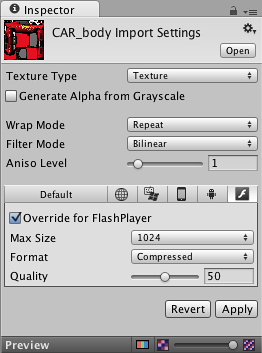

Thank you for helping us improve the quality of Unity Documentation. Although we cannot accept all submissions, we do read each suggested change from our users and will make updates where applicable.
For some reason your suggested change could not be submitted. Please try again in a few minutes. And thank you for taking the time to help us improve the quality of Unity Documentation.
Editor Scripting (JavaScript / C# / Boo). Note: for JavaScript, use #pragma strict.
Custom shaders
Animation / skinning
Basic types like int, string, List
Basic audio features, such as AudioSource / AudioListener
Physics
Navigation Meshes
Substance Textures, however the textures are baked at build time so cannot be dynamically changed at runtime
PlayerPrefs - On Flash PlayerPrefs are stored per SWF per machine
UnityGUI classes that do not require text input
Particle System (Shuriken) works and is script accessible
Asset bundles - These are supported but caching of bundles (i.e. use of LoadFromCacheOrDownload) is not currently supported
WWW and WWWForm
Mecanim
Limited support
Realtime shadows work, but do get affected by bugs in image effects
Untyped variables in JavaScript and implicit type conversions
Unity GUI / Immediate mode GUI
Any .NET specific stuff. Do not use stuff from exotic class libraries (reflection, LINQ etc).
GUIText wil have a dramatic impact on performance
Not Currently Supported
Image Effects
Unity profiler
UnityGUI classes that require text input
Raknet networking (if you need networking, you can write it in Action Script 3 directly, using flash API)
Cloth
VertexLit shaders currently do not support Spot Lights (they are treated just like point lights).
Advanced audio features, such as audio effects
Terrain
Texture mipMapBias
Non-triangle MeshTopology and wireframe rendering
AsyncOperation
Won’t be supported
Sockets - It is possible to use ActionScript sockets by implementing them in AS3.
Deferred rendering
Texture Support
We support jpeg textures, as well as RGBA / Truecolor. Textures which are jpg-xr compressed are not readable and thus not supported.
The compression ratio can be specified in the texture import under ‘Override for FlashPlayer’ setting. Compressed textures get converted to jpeg with the chosen compression ratio. The compression ratio is worth experimenting with since it can considerably reduce the size of the final SWF.

Texture quality ranges from 0 to 100, with 100 indicating no compression, and 0 the highest amount of compression possible.
The maximum supported texture resolution is 2048x2048.